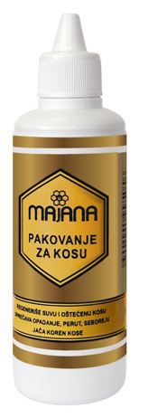

PROIZVODI
lista naših proizvoda
PROIZVODI
-

Imunil 450g
Imunil je idealna kombinacija brvelikog
broja vitamina, minerala, aminokiselina,
ugljenih hidrata, enzima i drugih supstanci
iz pčelinjih proizvoda koje povoljno utiču
na metaboličkeprocese u organizmu. Koristi
se za revitalizaciju i jačanje odbrambenih
sposobnosti organizma.
Način upotrebe: 1-3 puta na dan, sata pre jela, plastičnu(drvenu) kašičicu preparata lagano otopiti u ustima. Deci od 2 do 12 godina davati po pola kašičice 1-3 puta na dan. Imunil se može uzimati i rastvoren u mlakoj vodi, čaju, mleku.
Sastav: cvetni poliflorni med 89%, poliflorni polen 9%, propolis 1,5%, mleč 0,5%. -

Bronhil 450g
Odlična kombinacija prirodnih sastojaka
koja zbog antibakterijskog, antivirusnog,
antigljivičnog i antiinflamatornog dejstva
propolisa može delovati povoljno na zdravlje
respiratornog sistema.
Način upotrebe: 3-4 puta na dan, ½ sata
pre jela, plastičnu(drvenu) kašičicu
preparata lagano otopiti u ustima.
Deci od 2 do 12 godina davati po pola
kašičice 3-4 puta na dan. Bronhil se može
uzimati i rastvoren u mlakoj vodi,
čaju, mleku.
Sastav: cvetni poliflorni med 98%,
propolis 2%, etarsko ulje nane. -
Propolis kapi 20ml
Propolis kapi su izrađene od
propolisa I klase.
Visokoprečišćeni 20% ekstrakt propolisa
u etanolskom rastvoru sadrži širok
sprektar fiziološki aktivnih supstanci
kao što su: bioflavonoidi, fitohormoni,
etarska ulja, polen, vitamini, mikro i
makro elementi.
Propolis kapi se mogu koristiti:
• za jačanje odbrambene
sposobnosti organizma
• kod upala sluzokože usta i grla
• kod upala desni i parodontopatija.
Uzimaju se sa kašičicom meda, kockom
šećera, rastvorene u malo vode, mleku, čaju. -
Mleko za lice 100ml
Mleko za lice sa medom temeljno
uklanja šminku i nečistoće sa
lica i vrata, ali takođe i neguje kožu.
Koža je posle čišćenja navlažena,
meka i glatka.
Način upotrebe: Komadićem vate nanesite
mleko na lice i vrat i laganim pokretima
uklonite nečistoće. Nakon čišćenja na kožu
nanesite Majana tonik. -
Tonik za lice 100ml
Tonik sa propolisom, žalfijom i
timijanom namenjen je za masnu kožu
lica. Osvežava, vlaži i zateže kožu.
Način upotrebe: Natopite tampon vate
tonikom i nanesite na lice, vrat i dekolte.
Osobe alergične na propolis ne treba da
koriste ovaj proizvod. -
Maska i Piling 70ml
Sadrži med, polen, maslinovo, arganovo i
ulje makadamije. Namenjena je svim tipovima
kože. Sastojci maske dobro vlaže kožu, a
posle pilinga sa zrncima polena koža je
zategnuta i glatka. -

Hidratantna krema 50ml
Hidratantna krema namenjena je za negu
lica svih tipova kože. Aktivni prirodni
sastojci iz meda, pčelinjeg voska,
visokokvalitetna prirodna ulja i
vitamin E,obezbeđuju koži vlažnost,
mekoću i popravljaju elastičnost i
time odlažu proces starenja i boranja kože.
Redovnom upotrebom bićete zadovoljni
izgledom Vaše kože.
Način upotrebe: Nanesite kremu
ujutru i uveče na očišćenu kožu lica
i vrata uz blagu masažu.
Dobra je podloga za šminku.
-

Masna krema 50ml
Masna krema namenjena je za negu suve i
osetljive kože lica. Aktivni prirodni
sastojci iz meda, pčelinjeg voska,
visokokvalitetna prirodna ulja i
vitamin E, obezbeđuju koži vlažnost,
mekoću i popravljaju elastičnost i
time odlažu proces starenja i boranja kože.
Redovnom upotrebom bićete zadovoljni
izgledom Vaše kože.
Način upotrebe: Nanesite kremu ujutru
i uveče na očišćenu kožu lica i vrata uz
blagu masažu. Dobra je podloga za šminku. -

Antirid 30ml
Aktivni prirodni sastojci iz pčelinjeg
voska, viskokvalitetna prirodna ulja i
vitamin E intenzivno hrane kožu, umanjuju
postojeće bore i sprečavaju nastanak novih.
Način upotrebe: Nanosi se laganim
kružnim pokretima na predeo oko očiju,
usana, vrata i dekoltea, posle čišćenja kože. -

Propolis melem 30ml
Aktivni prirodni sastojci iz propolisa,
pčelinjeg voska, kao i komponente
kantarionovog i maslinovog ulja
popravljaju funkciju suve i isušene kože.
Način upotrebe: Namazati više puta u
toku dana u tankom sloju. -
Propolis mast 15ml
Propolis mast brzo dovodi do epitelizacije
rana, može pomoći kod raznih vrsta ekcema,
herpesa, hemoroida, svraba, mladalačkih bubuljica.
Način upotrebe: Namazati više puta u
toku dana u tankom sloju.
-
Mast za pete 30ml
Efikasna mast za negu grube i ispucale
kože peta i laktova. Vraća koži elastičnost i mekoću.
Način upotrebe: Uveče mazati mast na pete i laktove. -
Anticelulit Gel 200ml
Anticelulit gel kao aktivne komponente sadrži
esktrakt bršaljana, ekstrakt hamamelisa i
ekstrakt propolisa. Jedinstvena kombinacija
sastojaka utiče da gel dobro prodire u kožu,
aktivira mikrocirkulaciju, pomaže izbacivanje
štetnih materija. Redovnom upotrebom koža
postaje elastična i zategnuta. -

Pakovanje za kosu 100ml
Biljna ulja u kombinaciji sa propolisom
neguju i omekšavaju suvu i tanku kosu,
popravljaju njenu mekoću i vraćaju
prirodan sjaj.
Način upotrebe: Pakovanje pre upotrebe
promućkati. Umasirati pakovanje u kožu glave
i naneti na krajeve kose. Obaviti folijom i
ostaviti da deluje 1h. Potom kosu oprati
šamponom. Kašičica pakovanja se može
izmešati sa farbom za kosu.
-

Depilator za lice 100g
Depilator za lice namenjen je za
odstranjivanje malja sa nausnica,
brade i obrva za sve tipove kože.
Sastoji se od prirodne smole,
kolofonijum, pčelinjeg voska i
propolisa. Koža posle depilacije
ostaje glatka, meka i bez crvenila.
Način upotrebe: Depilator otopiti
na mlakoj ringli, do gustine meda.
Špatulom naneti u tankom sloju, na
suvu i čistu kožu, u smeru rasta
dlačica. Preko depilatora, odmah
staviti i pritisnuti celuloznu traku.
Nakon desetak sekundi, naglim
potezom traku povući u suprotnom
smeru od rastadlačica. Ukoliko je
potrebno, ponoviti ostupak.
Redovnom upotrebom može se
usporiti rast dlačica. -
Honey lips 5ml
Med, pčelinji vosak, visokokvalitetna
prirodna ulja i vitamin E neguju usne i štite
od pucanja i sušenja, obezbeđuju glatkoću i mekoću usana.
Način upotrebe: Više puta u toku dana u
tankom sloju namazati usne.